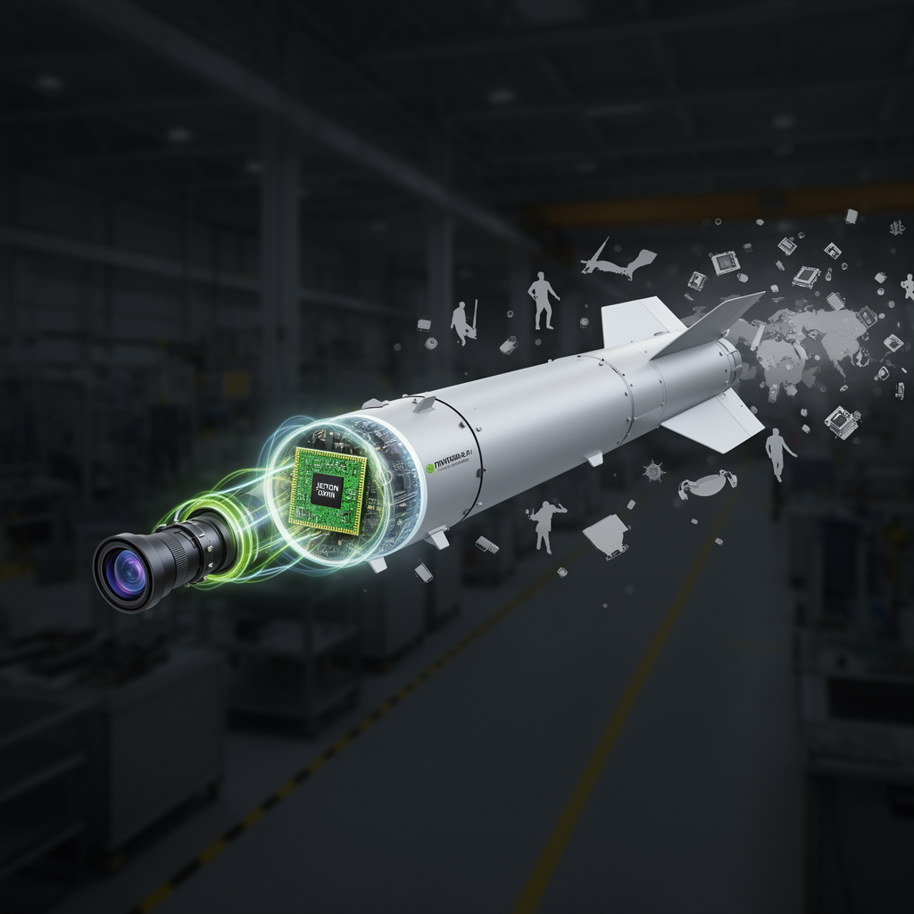

AI Panorama · fly through the Kimi K2.6 edition
This page was written entirely by Kimi K2.6 (Moonshot), as one of the magazine's editions - eight AI models each wrote their own version of every story from the same frozen sources.
The same story in other editions: GPT-5.6 Terra Claude Sonnet 5 Gemini 3.7 Flash Grok 4.6 DeepSeek V4 Pro GLM 5.3 Qwen 3.8 Max
Ukraine says it found a U.S.-made Nvidia AI computer inside Russia's S-71 missile, pointing to autonomous targeting technology.

## The Discovery
On August 12, Ukraine’s Main Directorate of Intelligence (HUR) announced that its experts had found an Nvidia Jetson Orin computer module inside Russia’s new S-71M “Monochrome” air-launched cruise missile. The discovery was part of a larger release documenting 35 foreign-made electronic components recently identified in Russian weapons.
The S-71M Monochrome is a modified version of the earlier S-71 Kovyor cruise missile, designed to fit inside the internal weapons bays of Russia’s Su-57 fighter jet and the S-70 Okhotnik unmanned combat aircraft. According to Ukrainian sources, the missile is built with reduced radar observability in mind: one Ukrainian military channel claims its radar cross-section is as small as 0.007 square meters at certain angles. Most sources describe its range as roughly 300 kilometers, though one Ukrainian estimate puts it between 350 and 400 kilometers. It reportedly carries a 250-kilogram high-explosive fragmentation warhead and flies at about 500 to 600 kilometers per hour.
## A Consumer AI Chip Guiding a Weapon
The Jetson Orin is a compact “system-on-module” built by the U.S. chipmaker Nvidia for artificial-intelligence tasks such as computer vision and autonomous navigation. Depending on the exact model, it can perform up to 157 trillion operations per second while drawing as little as ten watts of power—making it ideal for small robots and drones that cannot carry heavy hardware or large batteries.
Photographs released by Ukrainian intelligence show a chip marked SNVUP6.MOP TE980M-A1, which analysts say resembles the Jetson Orin NX. Based on the markings, the unit was packaged in March 2025.
In a statement to Tom's Hardware, Nvidia said the Orin line is a consumer-grade product aimed at students, developers, and startups, not a military component. The company said it does not sell in Russia and cannot track every device after it leaves the factory, but added that it will act if it finds a customer violating U.S. export controls. Unlike Nvidia’s high-end data-center chips—which face strict U.S. export restrictions—the Jetson Orin is not an officially controlled item.
Ukrainian intelligence did not specify exactly which function the module performs inside the missile. However, the likely role is terminal guidance during the final phase of flight. The missile already carries a Chinese-made Honpho TS130C-01 camera, and the Jetson Orin’s local processing power could analyze those images aboard the missile itself, recognize a target, and adjust course—without needing a continuous radio link to a command center. This kind of on-board decision-making is sometimes called “edge AI,” because the computing happens at the edge of the network, on the device, rather than in a distant cloud server.
## Sanctions and Supply Chains
The finding underscores a persistent problem. Despite years of international sanctions, Russia continues to rely on imported electronics for its advanced weapons. As of August 2026, HUR had catalogued 5,816 foreign-made components across 202 Russian weapons systems, including parts in Geran-2 drones and Kh-47M2 Kinzhal missiles.
Interestingly, Ukraine notes that Russia’s Oreshnik ballistic missile appears to use only Russian and Belarusian parts—suggesting that some programs are making progress in domestic substitution, while others remain dependent on global supply chains.
For regulators and manufacturers, the episode illustrates how difficult it is to control widely available consumer technology. A cheap, compact AI board sold for robotics experiments can be diverted into a cruise missile’s guidance system, and once it enters the secondary market through resellers, tracing its path to a weapons factory becomes exceedingly difficult.
ai-safetyroboticschinadronessanctions